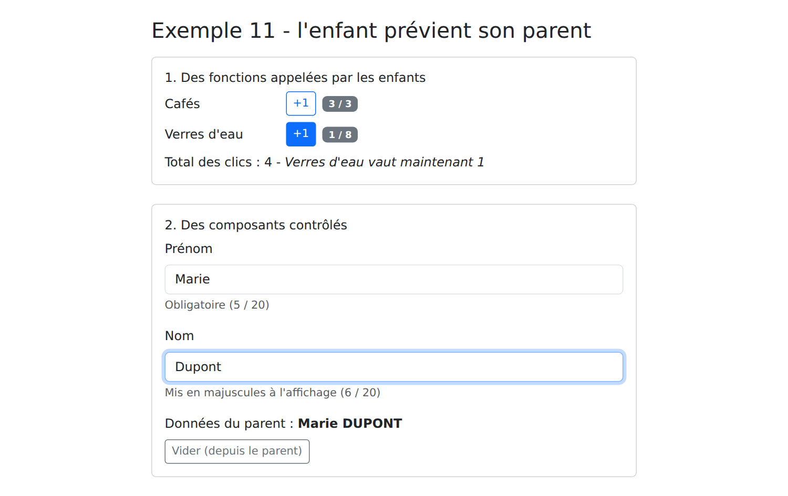
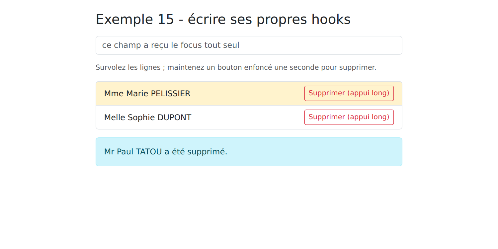
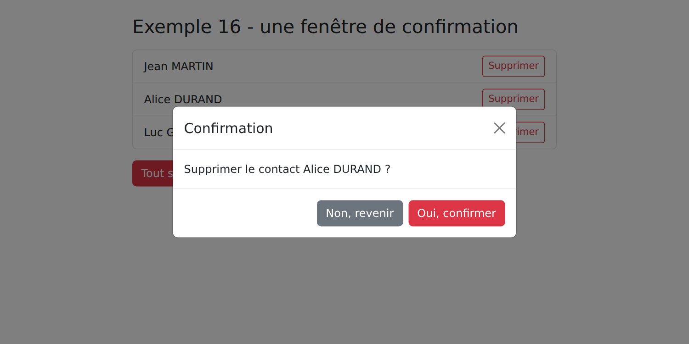
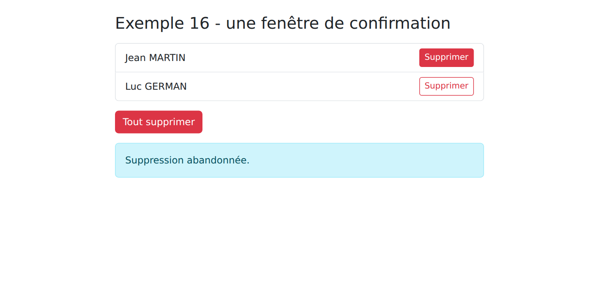

3. Les composants
3.1. Exemple 10 : les composants et leurs props
Un composant est un morceau d'interface réutilisable. Cet exemple en écrit un, [CarteMedecin], et l'utilise plusieurs fois.
3.1.1. Le type des données
| // le type des données partagé par le parent (App) et l'enfant (CarteMedecin)
export interface Medecin {
id: number;
titre: string;
prenom: string;
nom: string;
specialite: string;
disponible: boolean;
}
|
Le type [Medecin] est partagé par le parent et l'enfant : il est rangé dans un module à part.
3.1.2. L'enfant
| // =========================================================================
// 10-composants/src/CarteMedecin.tsx - un composant ENFANT
// -------------------------------------------------------------------------
// Il reçoit ses données de son parent par des PROPS (propriétés) : les
// attributs écrits par le parent sur <CarteMedecin ... />, réunis par
// React en UN objet, premier paramètre de la fonction. Leur type est
// vérifié à la compilation : <CarteMedecin medecin={42} /> serait refusé.
//
// Règle d'or : un composant ne MODIFIE JAMAIS ses props. Les données
// descendent du parent vers l'enfant ; pour demander un changement,
// l'enfant appelle une fonction que le parent lui a passée (cf. exemple 11).
// =========================================================================
import type { Medecin } from './medecin';
// styles : un objet { initiales: '_initiales_x7f3a_1' } - le nom réel de chaque classe
import styles from './CarteMedecin.module.css';
// le type des props : ce que le parent PEUT (?) ou DOIT fournir
interface Props {
medecin: Medecin;
rang: number;
compact?: boolean; // facultatif
}
// on "déstructure" l'objet des props ; compact = false : sa valeur par défaut
export default function CarteMedecin({ medecin, rang, compact = false }: Props) {
// une valeur calculée à partir des props : recalculée si le parent les change
const initiales = `${medecin.prenom[0]}${medecin.nom[0]}`;
return (
<div className={`card h-100 ${medecin.disponible ? 'border-success' : ''}`}>
<div className="card-body d-flex gap-3 align-items-center">
<div className={styles.initiales}>{initiales}</div>
<div>
<h2 className="h6 mb-1">{rang}. {medecin.titre} {medecin.prenom} {medecin.nom}</h2>
{!compact && <p className="mb-0 text-muted small">{medecin.specialite}</p>}
</div>
</div>
</div>
);
}
|
- ligne 14 : un import de type seulement ;
- ligne 16 : l'import d'un module CSS (cf. plus bas) ;
- lignes 19-23 : le type des props du composant : les attributs que le parent écrit sur [<CarteMedecin ... />]. [compact?] est facultatif ;
- ligne 26 : [React] réunit les props en UN objet, qu'il passe en premier paramètre à la fonction. On le « déstructure » aussitôt : [{ medecin, rang, compact = false }] donne trois variables, [compact] valant [false] si le parent ne le fournit pas. Le type des props est vérifié à la compilation : [<CarteMedecin medecin={42} />] serait refusé, comme l'oubli de [rang] ;
- ligne 28 : une valeur calculée à partir des props : si le parent change les props, le composant est rappelé et elle est recalculée ;
- ligne 33 : la classe CSS, lue dans le module CSS ;
- ligne 36 : la spécialité n'est affichée qu'en mode normal.
Règle d'or : un composant ne modifie jamais ses props. Les données descendent du parent vers l'enfant ; pour demander un changement, l'enfant appelle une fonction que le parent lui a passée (cf. exemple 11).
3.1.3. Un module CSS
| /* un "module CSS" (fichier *.module.css) : Vite renomme chaque classe
(.initiales -> ._initiales_x7f3a_1) ; elle ne peut donc s'appliquer qu'aux
éléments du composant qui l'importe */
.initiales {
width: 2.5rem;
height: 2.5rem;
border-radius: 50%;
display: flex;
align-items: center;
justify-content: center;
background: #087ea4;
color: white;
font-weight: bold;
}
|
Un fichier dont le nom se termine par [.module.css] est un module CSS : [Vite] renomme chacune de ses classes ([.initiales] devient, par exemple, [._initiales_x7f3a_1]) et fournit, à l'import, un objet qui associe le nom d'origine au nom réel : [styles.initiales]. La classe ne peut donc s'appliquer qu'aux éléments du composant qui l'importe : c'est l'équivalent de l'encapsulation des styles d'[Angular]. Les classes de [Bootstrap], globales, restent utilisables partout.
3.1.4. Le parent
| // =========================================================================
// 10-composants/src/App.tsx - le composant PARENT
// -------------------------------------------------------------------------
// Il importe le composant CarteMedecin et l'utilise comme une nouvelle
// balise, <CarteMedecin />, autant de fois qu'il le faut : un composant est
// un morceau d'interface RÉUTILISABLE, avec ses propres données, son JSX et
// son style. Une balise qui commence par une MAJUSCULE est un composant ;
// en minuscules (<div>, <p>), c'est un élément HTML.
// =========================================================================
import { useState } from 'react';
import CarteMedecin from './CarteMedecin';
import type { Medecin } from './medecin';
export default function App() {
const [medecins, setMedecins] = useState<Medecin[]>([
{ id: 1, titre: 'Mme', prenom: 'Marie', nom: 'PELISSIER', specialite: 'généraliste', disponible: true },
{ id: 2, titre: 'Mr', prenom: 'Paul', nom: 'TATOU', specialite: 'pédiatre', disponible: false },
{ id: 3, titre: 'Melle', prenom: 'Sophie', nom: 'DUPONT', specialite: 'généraliste', disponible: true },
]);
const [compact, setCompact] = useState(false);
// le parent modifie SES données : React rappelle le parent, puis les
// enfants, avec leurs nouvelles props
function inverserDisponibilite() {
setMedecins((liste) => liste.map((m) => ({ ...m, disponible: !m.disponible })));
}
return (
<div className="container py-4">
<h1 className="h3 mb-3">Exemple 10 - les composants et leurs props</h1>
<div className="d-flex gap-3 mb-3">
<label className="form-check-label">
<input type="checkbox" className="form-check-input" checked={compact}
onChange={(e) => setCompact(e.target.checked)} /> affichage compact
</label>
<button className="btn btn-sm btn-outline-primary" onClick={inverserDisponibilite}>Inverser les disponibilités</button>
</div>
<div className="row g-3">
{medecins.map((m, i) => (
<div key={m.id} className="col-md-4">
{/* medecin={m} transmet l'OBJET m (une expression) ;
medecin="m", sans accolades, transmettrait la CHAÎNE "m" */}
<CarteMedecin medecin={m} rang={i + 1} compact={compact} />
</div>
))}
</div>
<p className="mt-3 mb-1 small text-muted">La même carte, en version compacte, par un attribut sans valeur :</p>
<div className="w-50">
{/* compact, sans valeur, vaut true */}
<CarteMedecin medecin={medecins[0]} rang={1} compact />
</div>
</div>
);
}
|
- ligne 12 : le composant enfant est importé comme n'importe quel module ;
- lignes 25-27 : le parent modifie SES données. [React] le rappelle, puis rappelle les enfants avec leurs nouvelles props : les cartes se mettent à jour ;
- ligne 44 : le composant s'utilise comme une nouvelle balise. [medecin={m}] transmet l'OBJET [m] (une expression) ; [medecin="m"], sans accolades, transmettrait la CHAÎNE « m » ;
- ligne 51 : un attribut sans valeur ([compact]) vaut [true].

En cochant « affichage compact » puis en inversant les disponibilités :

3.2. Exemple 11 : l'enfant prévient son parent
Les données descendent, par les props. Pour faire remonter une information, le parent passe à l'enfant des fonctions, que l'enfant appelle.
3.2.1. Des « événements » de l'enfant
| // =========================================================================
// 11-remonter-l-information/src/Compteur.tsx
// -------------------------------------------------------------------------
// Un enfant qui PRÉVIENT son parent : le parent lui passe des FONCTIONS
// dans ses props (par convention, leur nom commence par "on"), et l'enfant
// les appelle quand il se passe quelque chose :
// <Compteur libelle="Cafés" max={3} onIncremente={...} onLimite={...} />
// =========================================================================
import { useState } from 'react';
interface Props {
libelle: string;
max: number;
onIncremente: (valeur: number) => void; // avec la nouvelle valeur
onLimite: () => void; // sans donnée
}
export default function Compteur({ libelle, max, onIncremente, onLimite }: Props) {
// l'état PROPRE à ce compteur : chaque <Compteur> a le sien
const [valeur, setValeur] = useState(0);
function plus() {
if (valeur >= max) {
onLimite();
return;
}
setValeur(valeur + 1);
// valeur n'est pas encore modifiée (elle le sera au prochain appel du
// composant) : on transmet valeur + 1
onIncremente(valeur + 1);
}
return (
<div className="d-flex align-items-center gap-2 mb-2">
<span className="w-25">{libelle}</span>
<button className="btn btn-sm btn-outline-primary" onClick={plus}>+1</button>
<span className="badge text-bg-secondary">{valeur} / {max}</span>
</div>
);
}
|
- lignes 12-17 : deux props sont des fonctions : [onIncremente] reçoit la nouvelle valeur, [onLimite] ne reçoit rien. Par convention, leur nom commence par « on », comme [onClick] ;
- ligne 21 : l'état PROPRE à ce compteur : chaque [<Compteur>] de la page a le sien. L'état est attaché à la place du composant dans l'arbre de la page ;
- lignes 23-32 : on prévient le parent. Attention : [setValeur(valeur + 1)] ne change pas la variable [valeur] (une constante de CET appel du composant) : elle vaudra [valeur + 1] au PROCHAIN appel. On transmet donc [valeur + 1] au parent.
3.2.2. Un composant contrôlé
| // =========================================================================
// 11-remonter-l-information/src/ChampTexte.tsx - un composant CONTRÔLÉ
// -------------------------------------------------------------------------
// Un champ de formulaire "maison" (libellé + champ + aide + compteur de
// caractères) qui s'utilise comme un <input> contrôlé (cf. exemple 05) :
// <ChampTexte valeur={nom} onChange={setNom} libelle="Nom" max={20} />
// Le composant n'a AUCUN état : la valeur appartient au parent, qui la lui
// passe (valeur) et qu'il prévient de chaque frappe (onChange). C'est le
// parent qui décide de la nouvelle valeur.
// =========================================================================
import { useId } from 'react';
interface Props {
valeur: string;
onChange: (valeur: string) => void;
libelle: string;
max: number;
aide?: string;
}
export default function ChampTexte({ valeur, onChange, libelle, max, aide = '' }: Props) {
// useId : un identifiant UNIQUE, différent pour chaque <ChampTexte> de la
// page, pour relier <label htmlFor> et <input id>
const id = useId();
return (
<div className="mb-3">
<label className="form-label" htmlFor={id}>{libelle}</label>
<input id={id} className={`form-control ${valeur.length === max ? 'is-invalid' : ''}`} value={valeur}
maxLength={max} onChange={(e) => onChange(e.target.value)} />
<div className="form-text">{aide} ({valeur.length} / {max})</div>
</div>
);
}
|
Un champ de formulaire « maison » (libellé, champ, aide, compteur de caractères) qui s'utilise comme un [<input>] contrôlé (cf. exemple 05) : le parent lui passe la valeur ([valeur]) et une fonction appelée à chaque frappe ([onChange]).
- lignes 14-20 : les props ; [aide] est facultative ;
- ligne 25 : [useId()] fournit un identifiant unique, différent pour chaque [<ChampTexte>] de la page, pour relier [<label htmlFor>] et [<input id>] ;
- ligne 31 : chaque frappe appelle la fonction du parent, avec le nouveau texte.
Le composant n'a AUCUN état : la valeur appartient au parent, qui décide de la nouvelle valeur. C'est ce qu'on appelle « faire remonter l'état » ([lifting state up]) : une donnée partagée par plusieurs composants est rangée dans leur plus proche ancêtre commun.
3.2.3. Le parent
| // =========================================================================
// 11-remonter-l-information/src/App.tsx - le parent écoute ses enfants
// -------------------------------------------------------------------------
// Les données descendent (props) ; les informations remontent par des
// fonctions passées dans les props :
// 1. des "événements" de l'enfant : onIncremente, onLimite ;
// 2. un composant contrôlé : valeur + onChange, comme un <input>. L'état
// reste la propriété du parent, qui peut le modifier lui-même (Vider).
// =========================================================================
import { useState } from 'react';
import Compteur from './Compteur';
import ChampTexte from './ChampTexte';
export default function App() {
const [total, setTotal] = useState(0);
const [message, setMessage] = useState('');
const [prenom, setPrenom] = useState('Marie');
const [nom, setNom] = useState('PELISSIER');
// la fonction appelée par un compteur : elle reçoit la valeur qu'il transmet
function surIncremente(libelle: string, valeur: number) {
setTotal((t) => t + 1);
setMessage(`${libelle} vaut maintenant ${valeur}`);
}
function vider() {
setPrenom('');
setNom('');
}
return (
<div className="container py-4" style={{ maxWidth: 640 }}>
<h1 className="h3 mb-3">Exemple 11 - l'enfant prévient son parent</h1>
<div className="card p-3 mb-4">
<h2 className="h6">1. Des fonctions appelées par les enfants</h2>
<Compteur libelle="Cafés" max={3} onIncremente={(v) => surIncremente('Cafés', v)}
onLimite={() => setMessage('Pas plus de 3 cafés !')} />
<Compteur libelle="Verres d'eau" max={8} onIncremente={(v) => surIncremente("Verres d'eau", v)}
onLimite={() => setMessage('Assez bu.')} />
<p className="mb-0">Total des clics : {total} - <em>{message}</em></p>
</div>
<div className="card p-3">
<h2 className="h6">2. Des composants contrôlés</h2>
{/* onChange={setPrenom} : la fonction de l'état, passée telle quelle */}
<ChampTexte valeur={prenom} onChange={setPrenom} libelle="Prénom" max={20} aide="Obligatoire" />
<ChampTexte valeur={nom} onChange={setNom} libelle="Nom" max={20} aide="Mis en majuscules à l'affichage" />
<p className="mb-0">Données du parent : <strong>{prenom} {nom.toUpperCase()}</strong></p>
<button className="btn btn-sm btn-outline-secondary mt-2 align-self-start" onClick={vider}>Vider (depuis le parent)</button>
</div>
</div>
);
}
|
- lignes 22-25 : la fonction appelée par un compteur : elle reçoit la valeur qu'il transmet ;
- lignes 38-39 : le parent passe des fonctions fléchées, qui ajoutent le libellé du compteur ;
- ligne 48 : [onChange={setPrenom}] : la fonction de l'état est passée telle quelle : l'enfant l'appelle avec le nouveau texte ;
- ligne 51 : le parent modifie lui-même les valeurs ; les champs suivent.
On clique deux fois, puis quatre fois sur le premier « +1 », une fois sur le second, et l'on tape « Dupont » dans le nom :

3.3. Exemple 12 : la composition
Les props transmettent des données... mais aussi du contenu : du JSX est une valeur comme une autre (de type [ReactNode]), qu'on peut passer à un composant et qu'il place où il veut.
3.3.1. Une carte
| // =========================================================================
// 12-composition/src/Carte.tsx - un GABARIT réutilisable
// -------------------------------------------------------------------------
// Les props transmettent des DONNÉES... mais aussi du CONTENU : du JSX est
// une valeur comme une autre (de type ReactNode), qu'on peut passer à un
// composant et qu'il place où il veut :
// - children : la prop spéciale qui reçoit ce que le parent écrit ENTRE
// <Carte> et </Carte> - le contenu "principal" ;
// - entete, pied : d'autres emplacements, fournis par le parent sous
// forme de props ; entete a un contenu par défaut.
// La carte fixe le cadre (bordure, en-tête, pied), le parent fournit ce
// qu'il y a dedans. C'est l'équivalent, côté client, du gabarit layout.hbs
// et de son {{{body}}} dans le cours NestJS.
// =========================================================================
import type { ReactNode } from 'react';
interface Props {
couleur?: 'primary' | 'success' | 'danger';
entete?: ReactNode;
pied?: ReactNode;
children: ReactNode;
}
export default function Carte({ couleur, entete = 'Sans titre', pied, children }: Props) {
return (
<div className={`card mb-3 ${couleur ? `border-${couleur}` : ''}`}>
<div className={`card-header ${couleur ? `text-bg-${couleur}` : ''}`}>{entete}</div>
<div className="card-body">{children}</div>
{/* pas de pied fourni : pas de pied du tout */}
{pied && <div className="card-footer text-muted small">{pied}</div>}
</div>
);
}
|
- lignes 18-23 : [entete], [pied] et [children] sont des [ReactNode] : du JSX, du texte, un nombre, ou rien ;
- ligne 25 : un contenu par défaut ;
- ligne 29 : [children] est une prop spéciale : elle reçoit ce que le parent écrit ENTRE [<Carte>] et [</Carte>], le contenu « principal » ;
- ligne 31 : pas de pied fourni, pas de pied du tout.
La carte fixe le cadre (bordure, en-tête, pied), le parent fournit ce qu'il y a dedans : c'est l'équivalent de la projection de contenu d'[Angular] ([<ng-content>]) et des « slots » de [Vue.js], et, côté serveur, du gabarit [layout.hbs] et de son [{{{body}}}] dans le cours [NestJS].
3.3.2. Un tableau générique
| // =========================================================================
// 12-composition/src/Tableau.tsx - un tableau GÉNÉRIQUE
// -------------------------------------------------------------------------
// Tableau<T> est un composant générique : il affiche des lignes de
// n'importe quel type T. Il sait parcourir les lignes, mais pas comment
// afficher UNE ligne : c'est le parent qui le lui dit, en lui passant une
// FONCTION, renderLigne(ligne, index), qui renvoie le JSX des cellules.
// C'est ce qu'on appelle une "render prop" : le contenu fourni par le
// parent utilise des données qui appartiennent à l'enfant (la ligne, son
// rang).
// =========================================================================
import type { ReactNode } from 'react';
interface Props<T> {
lignes: T[];
colonnes: string[];
renderLigne: (ligne: T, index: number) => ReactNode;
vide?: ReactNode; // affiché quand il n'y a aucune ligne
}
// <T extends { id: number }> : chaque ligne doit avoir un id (la clé)
export default function Tableau<T extends { id: number }>({ lignes, colonnes, renderLigne, vide = 'Aucune donnée.' }: Props<T>) {
return (
<table className="table table-sm align-middle mb-0">
<thead>
<tr>
{colonnes.map((c) => <th key={c}>{c}</th>)}
</tr>
</thead>
<tbody>
{lignes.length === 0 ? (
<tr>
<td className="text-muted" colSpan={colonnes.length}>{vide}</td>
</tr>
) : (
lignes.map((l, i) => <tr key={l.id}>{renderLigne(l, i)}</tr>)
)}
</tbody>
</table>
);
}
|
- lignes 15-20 : un type générique : les props d'un tableau de lignes de type [T], quel qu'il soit ;
- ligne 18 : une prop qui est une fonction renvoyant du JSX : le tableau sait parcourir les lignes, mais pas comment afficher UNE ligne ; c'est le parent qui le lui dit. On appelle ce procédé une « render prop » ;
- ligne 23 : un composant générique : [T] est déduit, à l'utilisation, du type des lignes. Chaque ligne doit avoir un [id], qui sert de clé ;
- ligne 37 : pour chaque ligne, le tableau appelle la fonction du parent, en lui passant des données qui lui appartiennent (la ligne, son rang).
3.3.3. Le parent
| // =========================================================================
// 12-composition/src/App.tsx - utiliser les gabarits Carte et Tableau
// =========================================================================
import { useState } from 'react';
import Carte from './Carte';
import Tableau from './Tableau';
interface Creneau {
id: number;
horaire: string;
patient: string | null;
}
export default function App() {
const [creneaux] = useState<Creneau[]>([
{ id: 1, horaire: '8:00 - 8:20', patient: null },
{ id: 2, horaire: '8:20 - 8:40', patient: 'Mme Alice DURAND' },
{ id: 3, horaire: '8:40 - 9:00', patient: null },
]);
const libres = creneaux.filter((c) => c.patient === null).length;
return (
<div className="container py-4" style={{ maxWidth: 720 }}>
<h1 className="h3 mb-3">Exemple 12 - la composition</h1>
{/* entete et pied : du JSX passé en props ; entre les balises : children */}
<Carte couleur="primary" entete={<span>Agenda de Mme PELISSIER</span>} pied={`${libres} créneau(x) libre(s)`}>
{/* Tableau<Creneau> : T est déduit du type de lignes */}
<Tableau
lignes={creneaux}
colonnes={['#', 'Créneau', 'Statut']}
// la "render prop" : comment afficher UNE ligne ; c reçoit la ligne, i son rang
renderLigne={(c, i) => (
<>
<td>{i + 1}</td>
<td>{c.horaire}</td>
<td>
{c.patient ? (
<span className="badge text-bg-secondary">{c.patient}</span>
) : (
<span className="badge text-bg-success">Libre</span>
)}
</td>
</>
)}
/>
</Carte>
<Carte couleur="success" entete="Une carte sans pied">
<p className="mb-0">Le pied n'est pas fourni : la carte ne l'affiche pas.</p>
</Carte>
{/* pas d'en-tête fourni : le contenu par défaut, « Sans titre » */}
<Carte>
<Tableau<{ id: number; nom: string }>
lignes={[]}
colonnes={['Nom']}
renderLigne={(p) => <td>{p.nom}</td>}
vide={<span>Personne pour l'instant.</span>}
/>
</Carte>
</div>
);
}
|
- ligne 28 : [entete] et [pied] reçoivent du JSX ou du texte ; le [<Tableau>] écrit entre les balises devient le [children] de la carte ;
- lignes 34-43 : la render prop : comment afficher UNE ligne ; [c] reçoit la ligne (de type [Creneau], déduit de [lignes]), [i] son rang ;
- ligne 56 : avec une liste vide, [TypeScript] ne peut pas deviner [T] : on le donne explicitement ;
- ligne 60 : le contenu affiché quand il n'y a aucune ligne.

3.4. Exemple 13 : le cycle de vie d'un composant
3.4.1. Une horloge
| // =========================================================================
// 13-cycle-de-vie/src/Horloge.tsx - un composant qui démarre et s'arrête
// -------------------------------------------------------------------------
// La vie d'un composant :
// 1. il est AFFICHÉ (monté) : React appelle la fonction et place son
// résultat dans la page ; puis il exécute ses effets (useEffect) ;
// 2. il est MIS À JOUR, autant de fois qu'il le faut (son état ou ses
// props changent) ;
// 3. il est RETIRÉ de la page (démonté) : React exécute le NETTOYAGE de
// ses effets, la fonction que chaque effet a renvoyée.
// Une horloge lance une minuterie (setInterval) quand elle apparaît... et
// doit impérativement l'arrêter quand elle disparaît : sinon la minuterie
// continuerait de tourner pour rien (fuite de mémoire).
// =========================================================================
import { useEffect, useEffectEvent, useState } from 'react';
interface Props {
onJournal: (message: string) => void;
}
export default function Horloge({ onJournal }: Props) {
const [heure, setHeure] = useState(() => new Date().toLocaleTimeString());
// useEffectEvent : une fonction appelée PAR un effet, qui lit toujours
// les props les plus récentes, sans être une dépendance de l'effet. Sans
// elle, il faudrait mettre onJournal dans les dépendances [...] ci-dessous,
// et, le parent passant une NOUVELLE fonction à chaque affichage, la
// minuterie serait arrêtée et relancée à chaque seconde
const journaliser = useEffectEvent((message: string) => onJournal(message));
// [] : aucune dépendance. L'effet s'exécute UNE fois, après le premier
// affichage ; la fonction qu'il renvoie, UNE fois, au retrait du composant
useEffect(() => {
journaliser('Horloge : effet - démarrage de la minuterie');
const minuterie = setInterval(() => setHeure(new Date().toLocaleTimeString()), 1000);
// le NETTOYAGE
return () => {
clearInterval(minuterie);
journaliser('Horloge : nettoyage - minuterie arrêtée');
};
}, []);
return <div className="display-6 font-monospace">{heure}</div>;
}
|
La vie d'un composant (lignes 4-10) : il est monté (affiché une première fois), mis à jour autant de fois qu'il le faut, puis démonté (retiré de la page). [React] n'a pas de méthodes séparées pour chaque étape : tout passe par [useEffect].
- lignes 34-42 : [useEffect(effet, [])] : avec un tableau de dépendances VIDE, l'effet n'est exécuté qu'une fois, après le premier affichage. La fonction qu'il renvoie (lignes 38-41) est le nettoyage : [React] l'exécute quand le composant est retiré de la page (et avant chaque nouvelle exécution de l'effet, quand ses dépendances changent). Une horloge lance une minuterie ([setInterval]) au démarrage... et doit impérativement l'arrêter ([clearInterval]) quand elle disparaît : sinon la minuterie continuerait de tourner pour rien, et tenterait de modifier l'état d'un composant qui n'existe plus ;
- ligne 30 : l'effet appelle la fonction [onJournal] du parent. En toute rigueur, il devrait la mettre dans ses dépendances : l'effet utilise une prop, il doit être relancé si elle change. Mais le parent fabrique une NOUVELLE fonction à chaque affichage : la minuterie serait arrêtée et relancée sans cesse. [useEffectEvent] ([React] 19.2) fabrique une fonction qui appelle toujours la version la plus récente de [onJournal], sans être une dépendance de l'effet. On ne l'appelle que depuis un effet.
3.4.2. Le parent
| // =========================================================================
// 13-cycle-de-vie/src/App.tsx
// -------------------------------------------------------------------------
// - {avecHorloge && <Horloge />} : cocher / décocher la case affiche /
// retire le composant (effet, puis nettoyage, cf. Horloge.tsx) ;
// - useRef : une référence à l'élément <input>, null tant qu'il n'est pas
// affiché ; un effet lui donne le focus dès qu'il apparaît ;
// - un effet qui SYNCHRONISE le titre de l'onglet avec la saisie.
//
// En développement, StrictMode (cf. main.tsx) monte chaque composant, le
// démonte, puis le remonte aussitôt : le journal montre donc démarrage,
// arrêt, démarrage. C'est voulu : un effet dont le nettoyage est mal écrit
// (une minuterie jamais arrêtée) se trahit immédiatement. En production, le
// composant n'est monté qu'une fois.
// =========================================================================
import { useEffect, useRef, useState } from 'react';
import Horloge from './Horloge';
export default function App() {
const [avecHorloge, setAvecHorloge] = useState(true);
const [journal, setJournal] = useState<string[]>([]);
const [recherche, setRecherche] = useState('');
const [afficherRecherche, setAfficherRecherche] = useState(false);
const champ = useRef<HTMLInputElement>(null);
function tracer(message: string) {
setJournal((j) => [...j, `${new Date().toLocaleTimeString()} ${message}`]);
}
// après le premier affichage de App (deux fois en développement : StrictMode)
useEffect(() => {
tracer('App : effet du premier affichage');
}, []);
// le champ vient d'apparaître : on lui donne le focus
useEffect(() => {
if (afficherRecherche) {
champ.current?.focus();
}
}, [afficherRecherche]);
// le titre de l'onglet suit la saisie, dès le démarrage
useEffect(() => {
document.title = recherche ? `Recherche : ${recherche}` : 'Exemple 13';
}, [recherche]);
return (
<div className="container py-4" style={{ maxWidth: 720 }}>
<h1 className="h3 mb-3">Exemple 13 - le cycle de vie d'un composant</h1>
<div className="card p-3 mb-3">
<label className="form-check-label mb-2">
<input type="checkbox" className="form-check-input" checked={avecHorloge}
onChange={(e) => setAvecHorloge(e.target.checked)} /> afficher l'horloge
</label>
{avecHorloge && <Horloge onJournal={tracer} />}
</div>
<div className="card p-3 mb-3">
{!afficherRecherche ? (
<button className="btn btn-outline-primary align-self-start" onClick={() => setAfficherRecherche(true)}>Rechercher...</button>
) : (
<input ref={champ} className="form-control" placeholder="le titre de l'onglet suit la saisie" value={recherche}
onChange={(e) => setRecherche(e.target.value)} />
)}
</div>
<h2 className="h6">Journal</h2>
<ol className="small">
{journal.map((ligne, i) => <li key={i}>{ligne}</li>)}
</ol>
</div>
);
}
|
- ligne 25 : une référence au champ de recherche, [null] tant qu'il n'est pas affiché ;
- lignes 32-34 : l'effet du premier affichage d'[App] ;
- lignes 37-41 : quand le champ apparaît, on lui donne le focus : l'effet s'exécute APRÈS l'affichage, quand l'élément existe et que la référence le désigne ;
- lignes 44-46 : un effet qui synchronise le titre de l'onglet avec l'état ;
- ligne 57 : cocher / décocher la case monte / démonte l'horloge.
Au démarrage, le journal est surprenant : l'horloge démarre, s'arrête et redémarre, et l'effet d'[App] est exécuté deux fois. C'est [<StrictMode>] (cf. [main.tsx]) : en développement seulement, [React] monte chaque composant, le démonte, puis le remonte aussitôt, pour vérifier que ses effets savent se nettoyer. Un effet mal écrit (une minuterie jamais arrêtée) se trahit ainsi immédiatement : on verrait l'horloge avancer de deux secondes à la fois. En production, le composant n'est monté qu'une fois. On remarque aussi que les effets des enfants (l'horloge) s'exécutent AVANT ceux du parent.
Puis on décoche et on recoche la case, et l'on tape « pédiatre » dans le champ de recherche :

Les effets sont la partie la plus délicate de [React]. Une règle guide leur usage : un effet synchronise le composant avec quelque chose d'extérieur à [React] (le titre de l'onglet, une minuterie, un écouteur d'événement du document, un serveur). Pour calculer une valeur à partir d'une autre, pas d'effet : une variable (exemple 02). Pour réagir à une action de l'utilisateur, pas d'effet : le gestionnaire de l'événement.
3.5. Exemple 14 : les contextes
Comment partager des données et des fonctions entre des composants éloignés, sans les passer de props en props à travers tous les intermédiaires ? Avec un contexte. C'est ainsi que [React] partage ce qu'[Angular] range dans ses services, fournis par injection de dépendances.
3.5.1. Un contexte pour toute l'application
| // =========================================================================
// 14-contextes/src/contextes/journal.tsx - un contexte pour TOUTE l'application
// -------------------------------------------------------------------------
// Comment partager des données et des fonctions entre des composants
// éloignés, sans les passer de props en props à travers tous les
// intermédiaires ? Avec un CONTEXTE :
// 1. createContext(valeurParDefaut) crée le contexte ;
// 2. un composant FOURNISSEUR, <JournalContexte value={...}>, en donne la
// valeur à TOUS ses descendants, à n'importe quelle profondeur ;
// 3. un descendant la LIT avec use(JournalContexte) (ou useContext).
// Quand la valeur fournie change, tous les composants qui la lisent sont
// rappelés.
//
// L'usage : un fichier par contexte, qui exporte le fournisseur (un
// composant qui contient l'état) et un HOOK pour le lire (useJournal).
// C'est ainsi que React partage ce qu'Angular range dans ses services.
// =========================================================================
import { createContext, use, useCallback, useMemo, useState, type ReactNode } from 'react';
interface Journal {
lignes: string[];
tracer: (message: string) => void;
}
// null : la valeur lue si AUCUN fournisseur n'englobe le composant
const JournalContexte = createContext<Journal | null>(null);
// le fournisseur : il contient l'état, et le fournit à ses descendants
export function JournalFournisseur({ children }: { children: ReactNode }) {
const [lignes, setLignes] = useState<string[]>([]);
// useCallback : la MÊME fonction d'un affichage à l'autre (et non une
// nouvelle à chaque fois), pour que les composants qui la reçoivent
// n'aient pas l'air d'avoir changé
const tracer = useCallback((message: string) => {
setLignes((l) => [`${new Date().toLocaleTimeString()} ${message}`, ...l].slice(0, 6));
}, []);
// useMemo : un nouvel objet seulement si lignes a changé
const valeur = useMemo(() => ({ lignes, tracer }), [lignes, tracer]);
// React 19 : le contexte lui-même est le composant fournisseur
return <JournalContexte value={valeur}>{children}</JournalContexte>;
}
// le hook de lecture : un nom qui commence par "use"
export function useJournal(): Journal {
// use(contexte) : la valeur fournie par le fournisseur le plus PROCHE
const journal = use(JournalContexte);
if (journal === null) {
throw new Error('useJournal doit être utilisé dans un <JournalFournisseur>');
}
return journal;
}
|
- lignes 21-24 : ce que le contexte fournit : des données et une fonction ;
- ligne 27 : [createContext(valeurParDéfaut)] crée le contexte. [null] : la valeur lue par un composant qu'aucun fournisseur n'englobe ;
- lignes 30-45 : le fournisseur : un composant qui contient l'état et le donne à tous ses descendants, à n'importe quelle profondeur :
- ligne 36 : [useCallback(fonction, [dépendances])] renvoie la MÊME fonction d'un affichage à l'autre (tant que les dépendances ne changent pas), et non une nouvelle. Ici, aucune dépendance : [setLignes] ne change jamais ;
- ligne 41 : l'objet fourni n'est refabriqué que si [lignes] a changé. Sans ces précautions, le fournisseur fournirait un nouvel objet à chaque affichage, et tous les composants qui lisent le contexte seraient rappelés inutilement ;
- ligne 44 : depuis [React] 19, le contexte lui-même est le composant fournisseur (on écrivait auparavant [<JournalContexte.Provider>]) ;
- lignes 48-55 : un hook de lecture. [use(contexte)] ([React] 19 ; [useContext] avant) donne la valeur du fournisseur le plus proche. Le hook vérifie qu'il y en a un : une erreur claire vaut mieux qu'un [null] inattendu.
3.5.2. Un contexte fourni par un composant
| // =========================================================================
// 14-contextes/src/contextes/panier.tsx - un contexte fourni par UN composant
// -------------------------------------------------------------------------
// Le panier n'est fourni qu'à une partie de l'arbre des composants : ceux
// qu'englobe <PanierFournisseur> (cf. App.tsx). Deux fournisseurs placés à
// deux endroits de la page donneraient deux paniers indépendants.
// Un fournisseur peut lui-même lire d'autres contextes : le panier
// utilise le journal.
// =========================================================================
import { createContext, use, useMemo, useState, type ReactNode } from 'react';
import { useJournal } from './journal';
export interface Article {
libelle: string;
prix: number;
}
interface Panier {
articles: Article[];
total: number;
ajouter: (article: Article) => void;
retirer: (index: number) => void;
}
const PanierContexte = createContext<Panier | null>(null);
export function PanierFournisseur({ children }: { children: ReactNode }) {
const { tracer } = useJournal();
const [articles, setArticles] = useState<Article[]>([]);
const valeur = useMemo<Panier>(
() => ({
articles,
total: articles.reduce((somme, a) => somme + a.prix, 0),
ajouter: (article) => {
setArticles((a) => [...a, article]);
tracer(`panier : + ${article.libelle}`);
},
retirer: (index) => {
tracer(`panier : - ${articles[index].libelle}`);
setArticles((a) => a.filter((_, i) => i !== index));
},
}),
[articles, tracer],
);
return <PanierContexte value={valeur}>{children}</PanierContexte>;
}
export function usePanier(): Panier {
const panier = use(PanierContexte);
if (panier === null) {
throw new Error('usePanier doit être utilisé dans un <PanierFournisseur>');
}
return panier;
}
|
Le panier n'est fourni qu'à une partie de l'arbre des composants : ceux qu'englobe [<PanierFournisseur>]. Deux fournisseurs placés à deux endroits de la page donneraient deux paniers indépendants.
- ligne 29 : un fournisseur est un composant : il peut lui-même lire d'autres contextes ; le panier utilise le journal ;
- lignes 32-46 : les données ([articles], [total]) et les actions ([ajouter], [retirer]), recalculées quand les articles changent.
3.5.3. Un contexte paramétré
| // =========================================================================
// 14-contextes/src/contextes/horloge.tsx - un contexte PARAMÉTRÉ
// -------------------------------------------------------------------------
// Une horloge, dont la période de rafraîchissement est une prop du
// fournisseur : <HorlogeFournisseur periode={5000}>. Deux fournisseurs
// imbriqués : un composant lit celui qui est le plus PROCHE de lui.
// L'horloge s'arrête quand son fournisseur disparaît (nettoyage de l'effet).
// =========================================================================
import { createContext, use, useEffect, useState, type ReactNode } from 'react';
// la valeur par défaut : une date figée, lue par un composant sans fournisseur
const HorlogeContexte = createContext<Date>(new Date());
export function HorlogeFournisseur({ periode = 1000, children }: { periode?: number; children: ReactNode }) {
const [maintenant, setMaintenant] = useState(() => new Date());
// [periode] : si le parent change la période, on relance la minuterie
useEffect(() => {
const minuterie = setInterval(() => setMaintenant(new Date()), periode);
return () => clearInterval(minuterie);
}, [periode]);
return <HorlogeContexte value={maintenant}>{children}</HorlogeContexte>;
}
export function useHorloge(): Date {
return use(HorlogeContexte);
}
|
- ligne 13 : ici, une vraie valeur par défaut : une date figée ;
- ligne 15 : la période de rafraîchissement est une prop du fournisseur ;
- lignes 19-22 : la minuterie ; si le parent change la période, l'effet est nettoyé puis relancé.
3.5.4. Les composants
| // 14-contextes/src/Catalogue.tsx - un descendant qui AJOUTE au panier
import { usePanier, type Article } from './contextes/panier';
const CATALOGUE: Article[] = [
{ libelle: 'Consultation', prix: 30 },
{ libelle: 'Vaccin', prix: 12.5 },
{ libelle: 'Certificat', prix: 5 },
];
export default function Catalogue() {
// le panier fourni par App (erreur si personne ne le fournit)
const panier = usePanier();
return (
<ul className="list-group">
{CATALOGUE.map((a) => (
<li key={a.libelle} className="list-group-item d-flex justify-content-between align-items-center">
{a.libelle} ({a.prix} €)
<button className="btn btn-sm btn-outline-primary" onClick={() => panier.ajouter(a)}>Ajouter</button>
</li>
))}
</ul>
);
}
|
[usePanier()] : le panier fourni par un ancêtre (erreur si personne ne le fournit).
| // =========================================================================
// 14-contextes/src/ResumePanier.tsx
// -------------------------------------------------------------------------
// Un autre descendant : le MÊME panier que Catalogue (fourni par App), mais
// SA PROPRE horloge, rafraîchie toutes les 5 secondes. Un composant ne lit
// que les fournisseurs placés AU-DESSUS de lui : ResumePanier place donc
// un second <HorlogeFournisseur> autour de son contenu, qu'il confie à un
// petit composant, Contenu.
// =========================================================================
import { HorlogeFournisseur, useHorloge } from './contextes/horloge';
import { usePanier } from './contextes/panier';
function Contenu() {
const panier = usePanier();
const maintenant = useHorloge(); // l'horloge la plus proche : celle de 5 s
return (
<div className="card p-3">
<h2 className="h6">
Panier ({panier.articles.length} article(s)) - {maintenant.toLocaleTimeString()}
</h2>
<ul className="mb-2">
{panier.articles.map((a, i) => (
<li key={i}>
{a.libelle}{' '}
<button className="btn btn-link btn-sm p-0 align-baseline" onClick={() => panier.retirer(i)}>retirer</button>
</li>
))}
</ul>
<strong>Total : {panier.total} €</strong>
</div>
);
}
export default function ResumePanier() {
return (
<HorlogeFournisseur periode={5000}>
<Contenu />
</HorlogeFournisseur>
);
}
|
- lignes 14-34 : le contenu du résumé lit le panier ET l'horloge. L'horloge la plus proche est celle de 5 secondes ;
- lignes 36-42 : un composant ne lit que les fournisseurs placés AU-DESSUS de lui : [ResumePanier] place donc son propre [<HorlogeFournisseur periode={5000}>] autour d'un sous-composant, [Contenu].
| // =========================================================================
// 14-contextes/src/App.tsx - trois niveaux de contextes
// -------------------------------------------------------------------------
// - le journal : fourni tout en haut (main.tsx), à toute l'application ;
// - le panier, fourni par App : partagé par Catalogue et ResumePanier,
// qui voient le MÊME panier ;
// - l'horloge, fournie par App (période par défaut, 1 s) ET par
// ResumePanier (5 s) : chacun la sienne.
// =========================================================================
import Catalogue from './Catalogue';
import ResumePanier from './ResumePanier';
import { useJournal } from './contextes/journal';
import { HorlogeFournisseur, useHorloge } from './contextes/horloge';
import { PanierFournisseur } from './contextes/panier';
// l'heure de l'horloge d'App : un petit composant, placé SOUS le fournisseur
function HeureApp() {
return <p className="text-muted">Horloge de App : {useHorloge().toLocaleTimeString()}</p>;
}
export default function App() {
const journal = useJournal();
return (
<HorlogeFournisseur>
<PanierFournisseur>
<div className="container py-4" style={{ maxWidth: 720 }}>
<h1 className="h3 mb-3">Exemple 14 - les contextes</h1>
<HeureApp />
<div className="row g-3">
<div className="col-md-6"><Catalogue /></div>
<div className="col-md-6"><ResumePanier /></div>
</div>
<h2 className="h6 mt-3">Journal (contexte racine)</h2>
<ul className="small">
{journal.lignes.map((ligne, i) => <li key={i}>{ligne}</li>)}
</ul>
</div>
</PanierFournisseur>
</HorlogeFournisseur>
);
}
|
- lignes 18-20 : [App] fournit l'horloge ; pour la lire, il faut un composant placé SOUS le fournisseur : [HeureApp] ;
- ligne 23 : [App] lit le journal, fourni plus haut ;
- lignes 26-27 : [App] fournit l'horloge (1 s) et le panier à ses descendants.
Et le fournisseur du journal, placé tout en haut :
| // =========================================================================
// 14-contextes/src/main.tsx - le fournisseur du journal englobe App : il
// est donc disponible dans TOUTE l'application
// =========================================================================
import { StrictMode } from 'react';
import { createRoot } from 'react-dom/client';
import 'bootstrap/dist/css/bootstrap.min.css';
import App from './App';
import { JournalFournisseur } from './contextes/journal';
createRoot(document.getElementById('root')!).render(
<StrictMode>
<JournalFournisseur>
<App />
</JournalFournisseur>
</StrictMode>,
);
|

L'horloge d'[App] avance chaque seconde, celle du panier toutes les cinq secondes. Les deux composants voient le même panier, et le journal enregistre chaque ajout.
Un contexte suffit pour des données qui changent rarement (l'utilisateur connecté, la langue, un thème) ou qui ne concernent qu'une partie de la page. Quand un état est partagé par toute l'application et change souvent, on préfère un « magasin » (exemple 20).
3.6. Exemple 15 : écrire ses propres hooks
Un composant réutilise de l'affichage ; un hook personnalisé réutilise un comportement, avec son état. C'est une fonction dont le nom commence par [use], et qui appelle elle-même des hooks. Cet exemple en écrit deux, pour les deux comportements que l'exemple 15 du cours [Angular] confiait à des directives.
3.6.1. Surligner un élément survolé
| // =========================================================================
// 15-hooks-personnalises/src/hooks/useSurvol.ts
// -------------------------------------------------------------------------
// Un HOOK PERSONNALISÉ est une fonction dont le nom commence par "use", et
// qui appelle elle-même des hooks (useState, useEffect, useRef...). Il
// permet de réutiliser un COMPORTEMENT (avec son état) dans plusieurs
// composants, comme un composant réutilise de l'affichage.
//
// Celui-ci surligne un élément survolé. Il renvoie les attributs à poser
// sur l'élément : <li {...useSurvol('#d1e7dd')}>. Chaque appel a son
// propre état : deux éléments surlignés ne se gênent pas.
// =========================================================================
import { useState } from 'react';
export function useSurvol(couleur = '#fff3cd') {
const [survole, setSurvole] = useState(false);
return {
style: { backgroundColor: survole ? couleur : undefined, transition: 'background-color 0.2s' },
onMouseEnter: () => setSurvole(true),
onMouseLeave: () => setSurvole(false),
};
}
|
Le hook a son propre état ([survole]), et renvoie les attributs à poser sur l'élément : un style, et deux gestionnaires d'événements. Chaque composant qui l'appelle a son propre état : deux éléments surlignés ne se gênent pas.
3.6.2. Un clic long
| // =========================================================================
// 15-hooks-personnalises/src/hooks/useClicLong.ts
// -------------------------------------------------------------------------
// const clicLong = useClicLong(() => supprimer(m), 1000);
// <button {...clicLong.gestionnaires} className={clicLong.enCours ? 'appui' : ''}>
// L'action n'est exécutée que si le bouton est maintenu enfoncé une
// seconde : une protection contre les clics malheureux. enCours dit si un
// appui est en cours (pour l'afficher).
// La minuterie est arrêtée si le composant disparaît pendant un appui.
// =========================================================================
import { useEffect, useRef, useState } from 'react';
export function useClicLong(action: () => void, duree = 1000) {
const [enCours, setEnCours] = useState(false);
// une valeur qui survit aux affichages SANS en provoquer : useRef
const minuterie = useRef<number | undefined>(undefined);
// au retrait du composant : pas de minuterie orpheline
useEffect(() => () => clearTimeout(minuterie.current), []);
function commencer() {
setEnCours(true);
minuterie.current = window.setTimeout(() => {
setEnCours(false);
action();
}, duree);
}
function arreter() {
clearTimeout(minuterie.current);
setEnCours(false);
}
return {
enCours,
gestionnaires: { onPointerDown: commencer, onPointerUp: arreter, onPointerLeave: arreter },
};
}
|
- ligne 17 : l'identifiant de la minuterie : une valeur qui doit survivre d'un affichage à l'autre, mais qui n'est pas affichée : une référence ;
- ligne 20 : un effet sans action, qui ne fait que nettoyer : si le composant disparaît pendant un appui, la minuterie est arrêtée ;
- lignes 22-28 : l'action n'est exécutée que si le bouton est maintenu enfoncé une seconde : une protection contre les clics malheureux ;
- lignes 35-38 : le hook renvoie l'état ([enCours], pour l'afficher) et les gestionnaires des événements du pointeur (souris, doigt ou stylet).
3.6.3. Donner le focus
| // =========================================================================
// 15-hooks-personnalises/src/hooks/autofocus.ts - une "ref callback"
// -------------------------------------------------------------------------
// ref={fonction} : React appelle la fonction avec l'élément HTML dès qu'il
// est placé dans la page (et, en React 19, appelle la fonction qu'elle
// renvoie éventuellement quand il en est retiré). Ce n'est pas un hook :
// une simple fonction, réutilisable partout :
// <input ref={autofocus} />
// (React gère aussi l'attribut autoFocus, qui fait la même chose.)
// =========================================================================
export function autofocus(element: HTMLElement | null): void {
element?.focus();
}
|
Une ref callback : on peut donner à l'attribut [ref] une fonction, que [React] appelle avec l'élément HTML dès qu'il est placé dans la page. Ce n'est pas un hook, mais une simple fonction.
3.6.4. L'utilisation
| // =========================================================================
// 15-hooks-personnalises/src/App.tsx - réutiliser des comportements
// -------------------------------------------------------------------------
// Les hooks ne s'appellent qu'au PREMIER NIVEAU d'un composant (jamais dans
// une boucle, une condition ou une fonction imbriquée) : React les
// reconnaît à leur ORDRE d'appel. Pour un comportement par ligne d'une
// liste, on écrit donc un petit composant par ligne, qui appelle ses hooks.
// =========================================================================
import { useState } from 'react';
import { useSurvol } from './hooks/useSurvol';
import { useClicLong } from './hooks/useClicLong';
import { autofocus } from './hooks/autofocus';
// le style du bouton pendant un appui long
const styleAppui = { outline: '4px solid #dc3545' };
// une ligne de la liste : elle appelle SES hooks
function LigneMedecin({ nom, pair, onSupprimer }: { nom: string; pair: boolean; onSupprimer: () => void }) {
// une ligne sur deux : la couleur par défaut ; les autres, du vert
const survol = useSurvol(pair ? undefined : '#d1e7dd');
const clicLong = useClicLong(onSupprimer, 1000);
return (
<li className="list-group-item d-flex justify-content-between align-items-center" {...survol}>
{nom}
<button className="btn btn-sm btn-outline-danger" style={clicLong.enCours ? styleAppui : undefined}
{...clicLong.gestionnaires}>
Supprimer (appui long)
</button>
</li>
);
}
export default function App() {
const [medecins, setMedecins] = useState(['Mme Marie PELISSIER', 'Mr Paul TATOU', 'Melle Sophie DUPONT']);
const [message, setMessage] = useState('');
function supprimer(nom: string) {
setMedecins((m) => m.filter((x) => x !== nom));
setMessage(`${nom} a été supprimé.`);
}
return (
<div className="container py-4" style={{ maxWidth: 640 }}>
<h1 className="h3 mb-3">Exemple 15 - écrire ses propres hooks</h1>
<input ref={autofocus} className="form-control mb-3" placeholder="ce champ a reçu le focus tout seul" />
<p className="small text-muted">Survolez les lignes ; maintenez un bouton enfoncé une seconde pour supprimer.</p>
<ul className="list-group mb-3">
{medecins.map((m, i) => (
<LigneMedecin key={m} nom={m} pair={i % 2 === 0} onSupprimer={() => supprimer(m)} />
))}
</ul>
{message && <p className="alert alert-info">{message}</p>}
</div>
);
}
|
Les hooks obéissent à une règle stricte : ils ne s'appellent qu'au premier niveau d'un composant ou d'un autre hook, jamais dans une boucle, une condition ou une fonction imbriquée. [React] reconnaît chaque [useState] à son rang d'appel : si l'ordre changeait d'un affichage à l'autre, les états seraient mélangés.
- lignes 19-33 : pour un comportement par ligne d'une liste, on ne peut donc pas appeler les hooks dans le [map] : on écrit un petit composant par ligne, qui appelle SES hooks ;
- ligne 25 : les attributs du survol, étalés sur la ligne ;
- ligne 28 : les gestionnaires du clic long, sur le bouton, et son style pendant l'appui ;
- ligne 47 : la ref callback ;
- ligne 52 : une ligne par médecin.
Au démarrage, le champ a le focus. Pendant un appui long sur le second bouton :

Puis, une fois la seconde écoulée :

Les hooks personnalisés sont la principale manière de réutiliser du code en [React]. Les bibliothèques en fournissent beaucoup : [useForm] (exemple 08), [useNavigate] (exemple 17), [useTranslation] (exemple 21), [useQuery] (exemple 24)...
3.7. Exemple 16 : une fenêtre de confirmation réutilisable
« Êtes-vous sûr ? » : [window.confirm()] existe, mais on ne peut ni le mettre en forme, ni traduire ses boutons. On le remplace par une fenêtre [Bootstrap], pilotée par un contexte.
3.7.1. Le contexte
| // =========================================================================
// 16-confirmation/src/confirmation/confirmation.tsx
// -------------------------------------------------------------------------
// « Êtes-vous sûr ? » : window.confirm() existe, mais on ne peut ni le
// mettre en forme, ni traduire ses boutons. On le remplace par une fenêtre
// Bootstrap, pilotée par un contexte (cf. exemple 14).
//
// L'astuce : confirmer(message) renvoie une PROMESSE, résolue à true (Oui)
// ou false (Non) quand l'utilisateur répond. Le code appelant s'écrit
// alors aussi simplement qu'avec window.confirm :
//
// const confirmer = useConfirmation();
// if (await confirmer('Supprimer ce médecin ?')) { ... }
//
// Le fournisseur affiche lui-même la fenêtre : il suffit de le placer une
// fois, autour de toute l'application (cf. main.tsx).
// =========================================================================
import { createContext, use, useCallback, useRef, useState, type ReactNode } from 'react';
import FenetreConfirmation from './FenetreConfirmation';
type Confirmer = (message: string) => Promise<boolean>;
const ConfirmationContexte = createContext<Confirmer | null>(null);
export function ConfirmationFournisseur({ children }: { children: ReactNode }) {
const [message, setMessage] = useState<string | null>(null); // null : fenêtre fermée
// la fonction qui résoudra la promesse en cours : elle n'est pas affichée,
// c'est donc une référence et non un état
const repondre = useRef<((oui: boolean) => void) | null>(null);
const confirmer = useCallback<Confirmer>((texte) => {
repondre.current?.(false); // une question encore ouverte ? elle vaut "non"
setMessage(texte);
return new Promise<boolean>((resolve) => {
repondre.current = resolve;
});
}, []);
function reponse(oui: boolean) {
setMessage(null);
const r = repondre.current;
repondre.current = null;
r?.(oui);
}
return (
<ConfirmationContexte value={confirmer}>
{children}
{message !== null && <FenetreConfirmation message={message} onReponse={reponse} />}
</ConfirmationContexte>
);
}
export function useConfirmation(): Confirmer {
const confirmer = use(ConfirmationContexte);
if (confirmer === null) {
throw new Error('useConfirmation doit être utilisé dans un <ConfirmationFournisseur>');
}
return confirmer;
}
|
L'astuce : [confirmer(message)] renvoie une promesse, résolue à [true] (Oui) ou [false] (Non) quand l'utilisateur répond. Le code appelant s'écrit alors aussi simplement qu'avec [window.confirm] : [if (await confirmer('Supprimer ce médecin ?')) {...}].
- ligne 22 : ce que fournit le contexte : une fonction ;
- ligne 27 : le message affiché ; [null] : la fenêtre est fermée ;
- ligne 30 : la fonction qui résoudra la promesse en cours. Elle n'est pas affichée : c'est une référence, et non un état ;
- lignes 32-38 : ouvrir la fenêtre, et renvoyer une promesse dont on garde la fonction [resolve]. Une question encore ouverte vaut « non » ;
- lignes 40-45 : la réponse : on ferme la fenêtre et l'on résout la promesse ;
- ligne 50 : le fournisseur affiche lui-même la fenêtre, quand il y a une question.
3.7.2. La fenêtre
| // =========================================================================
// 16-confirmation/src/confirmation/FenetreConfirmation.tsx
// -------------------------------------------------------------------------
// La fenêtre modale :
// - mêmes classes Bootstrap qu'une vraie modale (.modal, .modal-backdrop),
// affichées "en dur" (show d-block) : pas besoin du JavaScript de
// Bootstrap ;
// - createPortal : la fenêtre est placée à la fin de <body>, et non là où
// le composant est écrit. Elle échappe ainsi aux styles de ses
// ancêtres (overflow, z-index...), tout en restant un composant React
// ordinaire (props, événements) ;
// - clavier : Échap = Non ; le focus est placé sur le bouton "Non" (le
// choix le moins dangereux) à l'ouverture.
// =========================================================================
import { useEffect } from 'react';
import { createPortal } from 'react-dom';
interface Props {
message: string;
onReponse: (oui: boolean) => void;
}
export default function FenetreConfirmation({ message, onReponse }: Props) {
// Échap, n'importe où dans la page : un écouteur posé sur le DOCUMENT
// à l'ouverture, retiré à la fermeture (nettoyage de l'effet)
useEffect(() => {
const clavier = (e: KeyboardEvent) => {
if (e.key === 'Escape') onReponse(false);
};
document.addEventListener('keydown', clavier);
return () => document.removeEventListener('keydown', clavier);
}, [onReponse]);
return createPortal(
<>
<div className="modal-backdrop fade show"></div>
{/* un clic sur le fond (et non dans la fenêtre) vaut "non" */}
<div className="modal fade show d-block" tabIndex={-1} role="alertdialog" aria-modal="true"
onClick={(e) => e.target === e.currentTarget && onReponse(false)}>
<div className="modal-dialog modal-dialog-centered">
<div className="modal-content">
<div className="modal-header">
<h5 className="modal-title">Confirmation</h5>
<button type="button" className="btn-close" aria-label="Fermer" onClick={() => onReponse(false)}></button>
</div>
<div className="modal-body">
<p className="mb-0">{message}</p>
</div>
<div className="modal-footer">
{/* autoFocus : React donne le focus à ce bouton quand il apparaît */}
<button type="button" className="btn btn-secondary" autoFocus onClick={() => onReponse(false)}>Non, revenir</button>
<button type="button" className="btn btn-danger" onClick={() => onReponse(true)}>Oui, confirmer</button>
</div>
</div>
</div>
</div>
</>,
document.body,
);
}
|
- lignes 27-33 : la touche Échap, n'importe où dans la page : un écouteur posé sur le DOCUMENT à l'ouverture de la fenêtre, et retiré à sa fermeture (nettoyage). C'est typiquement le travail d'un effet : se brancher sur quelque chose d'extérieur à [React] ;
- ligne 35 : [createPortal(jsx, élément)] affiche le JSX ailleurs que là où le composant est écrit : ici, à la fin de [<body>]. La fenêtre échappe ainsi aux styles de ses ancêtres ([overflow], [z-index]...), tout en restant un composant [React] ordinaire (props, événements) ;
- lignes 37-39 : les classes [Bootstrap] d'une vraie fenêtre modale, affichées « en dur » ([show d-block]) : pas besoin du [JavaScript] de [Bootstrap] ;
- ligne 40 : un clic sur le fond (et non dans la fenêtre) vaut « non » ;
- ligne 52 : [React] donne le focus au bouton « Non », le choix le moins dangereux, quand il apparaît.
3.7.3. L'utilisation
| // =========================================================================
// 16-confirmation/src/App.tsx - utiliser la fenêtre de confirmation
// -------------------------------------------------------------------------
// Même page que l'exemple 21 du cours NestJS (liens, boutons, confirmation),
// mais sans aucun aller-retour avec un serveur.
// =========================================================================
import { useState } from 'react';
import { useConfirmation } from './confirmation/confirmation';
interface Contact {
id: number;
nom: string;
}
export default function App() {
const confirmer = useConfirmation();
const [contacts, setContacts] = useState<Contact[]>([
{ id: 1, nom: 'Jean MARTIN' },
{ id: 2, nom: 'Alice DURAND' },
{ id: 3, nom: 'Luc GERMAN' },
]);
const [message, setMessage] = useState('');
// une fonction async : elle "attend" la réponse de l'utilisateur
async function supprimer(c: Contact) {
if (!(await confirmer(`Supprimer le contact ${c.nom} ?`))) {
setMessage('Suppression abandonnée.');
return;
}
setContacts((liste) => liste.filter((x) => x.id !== c.id));
setMessage(`${c.nom} a été supprimé.`);
}
async function toutSupprimer() {
if (await confirmer(`Supprimer les ${contacts.length} contacts ?`)) {
setContacts([]);
setMessage('Tous les contacts ont été supprimés.');
}
}
return (
<div className="container py-4" style={{ maxWidth: 640 }}>
<h1 className="h3 mb-3">Exemple 16 - une fenêtre de confirmation</h1>
<ul className="list-group mb-3">
{contacts.map((c) => (
<li key={c.id} className="list-group-item d-flex justify-content-between align-items-center">
{c.nom}
<button className="btn btn-sm btn-outline-danger" onClick={() => supprimer(c)}>Supprimer</button>
</li>
))}
{contacts.length === 0 && <li className="list-group-item text-muted">Aucun contact.</li>}
</ul>
<button className="btn btn-danger" disabled={contacts.length === 0} onClick={toutSupprimer}>Tout supprimer</button>
{message && <p className="alert alert-info mt-3">{message}</p>}
</div>
);
}
|
- ligne 17 : la fonction de confirmation ;
- lignes 26-33 : une fonction [async] : elle « attend » ([await]) la réponse de l'utilisateur, sans bloquer la page.
| import { StrictMode } from 'react';
import { createRoot } from 'react-dom/client';
import 'bootstrap/dist/css/bootstrap.min.css';
import App from './App';
import { ConfirmationFournisseur } from './confirmation/confirmation';
// la fenêtre de confirmation, UNE fois pour toute l'application
createRoot(document.getElementById('root')!).render(
<StrictMode>
<ConfirmationFournisseur>
<App />
</ConfirmationFournisseur>
</StrictMode>,
);
|
La fenêtre, UNE fois pour toute l'application : son fournisseur englobe [App].

On confirme, puis on demande une autre suppression et l'on tape Échap :
